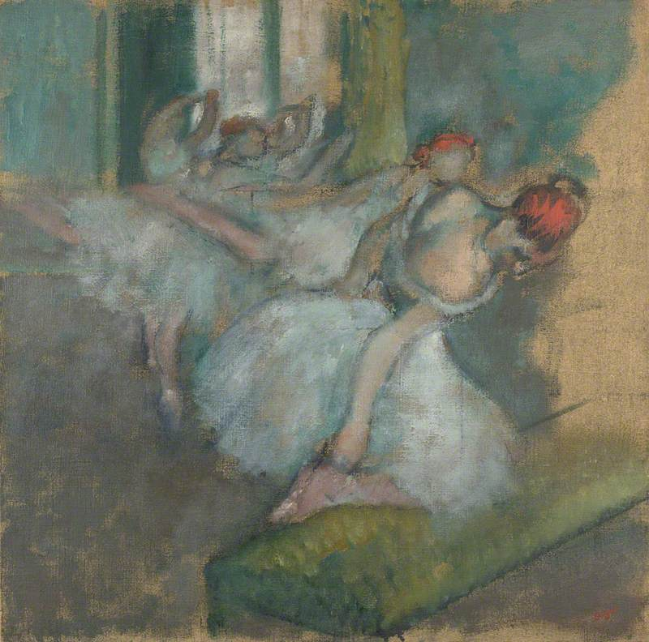

芭蕾舞者（白色纱裙） Ballet Dancers
德加 · 约1890–1900年 · 伦敦国家美术馆
Edgar Degas · about 1890–1900 · The National Gallery, London
图片：Wikimedia Commons，公有领域 / Image: Wikimedia Commons, public domain

发现 · Discover
白色纱裙 White tutus
这种白色纱裙，是19世纪末巴黎歌剧院年轻舞者的练功服。
These white tutus were the practice dress of the younger dancers at the Paris Opéra in the late 19th century.
两头红发 Two heads of red hair
舞者们笼罩在一片薄纱里，两头醒目的红发，好像把这些模糊的身影固定住了。
The dancers are clouded in tulle, but two striking heads of red hair seem to anchor the blurred figures.
系舞鞋 Tying the ribbons
离我们最近的舞者把脚搭在长凳上，正在系舞鞋的缎带，露出强健而富有表现力的背部。
The dancer closest to us rests her foot on the bench to adjust the ribbons of her shoe, showing her strong, expressive back.
阿拉贝斯克 Arabesque
她身后，一位舞者踮起脚尖做阿拉贝斯克，腿向后伸展，手指轻轻扶着墙。
Behind her, a dancer rises on pointe in arabesque, her leg stretched behind her, her fingers lightly touching the wall.
像粉彩的油画 Oil that looks like pastel
这是一幅油画，却有粉彩那种干而像粉末的质感。有些地方，能看到下面的画布。
This is an oil painting, but it has the dry, powdery look of pastel. In places, the canvas shows through.
课间的片刻 Between exercises
画的是上课时，在把杆上的准备练习和真正的舞台动作之间的那些片刻。
It shows the moments in class between preparatory exercises at the barre and the demanding steps of a real performance.
一遍又一遍 Again and again
舞者从小每天练习同样的动作，一遍又一遍。德加也一遍又一遍地画她们。
From childhood, the dancers practised the same steps every day, again and again. Degas painted them again and again too.
故事 · The story
ACT I 第一幕 · 课间 Between exercises
德加可以出入巴黎歌剧院的每个角落。这幅画里，他画的不是演出，而是上课时那些短暂的休息：系鞋带、扶墙、伸展。
Degas had access to every part of the Paris Opéra. Here he paints not a performance, but brief pauses in class: tying ribbons, steadying against the wall, stretching.
约1890–1900年 · 伦敦国家美术馆 / about 1890–1900 · The National Gallery, London
ACT II 第二幕 · 画室和记忆 Studio and memory
他可能在剧院里画过速写，但大部分作品是在画室完成的，舞者会到画室给他当模特。他也相信，凭记忆作画是创作里必不可少的一部分。
He probably sketched in the theatre, but did most of his work in the studio, where dancers came to pose. He also believed that drawing from memory was essential.
约1890–1900年 · 伦敦国家美术馆 / about 1890–1900 · The National Gallery, London
ACT III 第三幕 · 一百遍 A hundred times
德加写道：“一个题材必须画十遍、一百遍。艺术里没有任何东西应该看起来是偶然的。”1926年，伦敦国家美术馆用考陶尔德基金买下了这幅画，今天它挂在43号展厅。
Degas wrote: “It is necessary to do a subject ten times, a hundred times. Nothing in art must seem an accident.” In 1926, the National Gallery bought this painting with the Courtauld Fund. Today it hangs in Room 43.
约1890–1900年 · 伦敦国家美术馆 / about 1890–1900 · The National Gallery, London
艺术里没有任何东西应该看起来是偶然的。—— 德加 Nothing in art must seem an accident. — Degas
作品档案 · Artwork record
| 画家（生卒年） · Artist (dates) | 埃德加·德加（1834–1917） / Edgar Degas (1834–1917) |
|---|---|
| 画名 · Title | 芭蕾舞者 / Ballet Dancers |
| 年份 · Date | 约1890–1900年 / about 1890–1900 |
| 材质 · Medium | 布面油画 / Oil on canvas |
| 尺寸 · Dimensions | 72.5 × 73 cm |
| 收藏地 · Collection | 伦敦国家美术馆，43号展厅 / The National Gallery, London, Room 43 |
| 来源说明 · Credit line | 1926年用考陶尔德基金购入（编号 NG4168） / Bought, Courtauld Fund, 1926 (NG4168) |
关于画家 · About the artist
埃德加·德加（1834–1917），法国画家，生于巴黎。他参加了印象派画展，以描绘芭蕾舞者著称。
Edgar Degas (1834–1917) was a French painter, born in Paris. He took part in the Impressionist exhibitions and is best known for his paintings of ballet dancers.